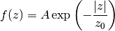

Bases: astropy.modeling.Fittable1DModel
Exponential distribution.

Usually used for height distribution above the Galactic plane, with 0.05 kpc as a commonly used birth height distribution.
| Parameters: | amplitude : float
z_0 : float
|
|---|
See also
CaseBattacharya1998, Paczynski1990, YusifovKucuk2004, Lorimer2006, YusifovKucuk2004B, FaucherKaspi2006, Exponential
Attributes Summary
| amplitude | |
| evolved | bool(x) -> bool |
| param_names | tuple() -> empty tuple |
| z_0 |
Methods Summary
| evaluate(z, amplitude, z_0) | One dimensional exponential model function |
Attributes Documentation
Methods Documentation